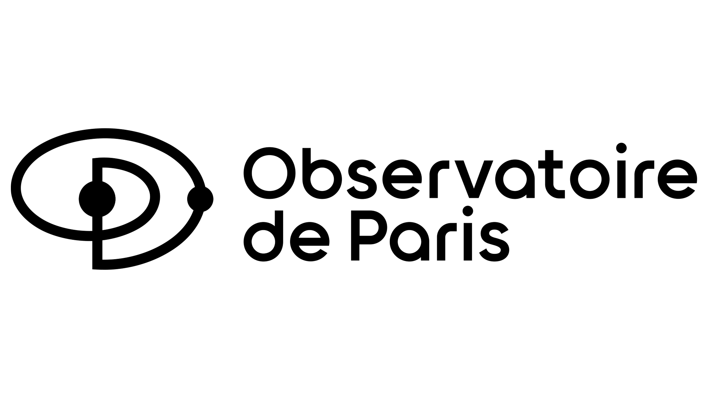
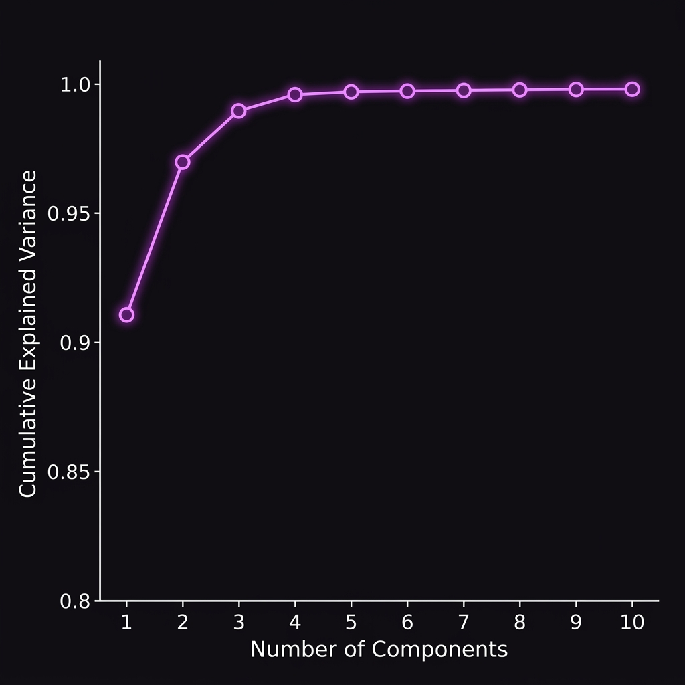

Books That Influenced Me
Status Anxiety
Alain de Botton
One Two Three...
Infinity
George Gamow
Zen & Art of
Motorcycle Maintenance
Robert M. Pirsig
The Journey:
From engineering to fundamental science
2015 - 2019
BSc Electrical Engineering
Istanbul Technical University · Istanbul, Turkey
Istanbul Technical University · Istanbul, Turkey
2019 - 2021
MSc Physics
Sorbonne University · Paris, France
Sorbonne University · Paris, France
2022 - 2026
PhD Numerical Cosmology
Federal University of Espírito Santo · Vitória, Brazil
Federal University of Espírito Santo · Vitória, Brazil
BSc Electrical Engineering - ITU
Istanbul Technical University · Istanbul, Turkey

MSc Physics - Sorbonne University
Sorbonne Université · Paris, France


PhD Numerical Cosmology - UFES
Federal University of Espírito Santo · Vitória, Brasil
Gravitational Lensing

Gravitational Lensing

Noise or Meaningful data?
Gravitational lensing distorts the light from distant objects.
What does this large structure depend on?
Gaussian Treatment

Theoretical Modeling

Simulations

Simulations

Simulations

Simulations

Simulations
24 hrs
Cost of one N-body simulation
1.7k
Supernovae in Pantheon+
1M+
Likelihood calls in MCMC

Emulator
Parameters
Ωm
→ (0.2 – 0.4)
h
→ (0.6 – 0.8)
w
→ (−1.5 – −0.7)
σ8
→ (0.7 – 0.9)
z
→ (0.3 – 6)
70
Different cosmologies
→
Statistics

1.5k
PDFs
How did we tackle it?
Instead of calling the simulation directly, we train a machine learning emulator
that learns the mapping from cosmological parameters → lensing PDF.
This replaces a 24-hour simulation with a millisecond prediction.
1. Simulations
N-body runs across parameter grid
→
2. PCA
Compress PDF into principal components
→
3. XGBoost
Learn parameter → PC mapping
→
4. Emulator
Predict PDF in milliseconds
→
5. MCMC
Infer cosmological parameters
Emulator
Parameters
Ωm
→ (0.2 – 0.4)
h
→ (0.6 – 0.8)
w
→ (−1.5 – −0.7)
σ8
→ (0.7 – 0.9)
z
→ (0.3 – 6)
70
Different cosmologies
→
Statistics
1.5k
PDFs
Emulator
Parameters
Ωm
→ (0.2 – 0.4)
h
→ (0.6 – 0.8)
w
→ (−1.5 – −0.7)
σ8
→ (0.7 – 0.9)
z
→ (0.3 – 6)
70
Different cosmologies
→
4 PCA components

1.5k
PDFs
Why XGBoost + PCA?
Why PCA first?
- Lensing PDFs are high-dimensional vectors
- PCA compresses them into 4 components capturing 99% of variance
- Predict components independently
Why XGBoost?
- Handles non-linear parameter dependencies well
- Fast to train and predict
- Robust with limited training data (simulation budget)

ACE-Lensing
ACE-Lensing is a full end-to-end pipeline: from N-body simulation outputs
to cosmological parameter inference.
Input: Cosmological parameters (Ωm, σ8, w, h)
↓
ACE-Lensing: XGBoost + PCA emulator
↓
Output: Magnification PDF in ~1 ms

Traditional Methods vs Emulator-Based Method
| Traditional Methods | Emulator-Based Method | |
|---|---|---|
| Use Case | Detail modeling | Fast parameter estimation |
| Computational Cost | High | Low |
| Speed | Slow | Fast |
| Flexibility | Depends on simulation or model | High |
| Accuracy | High | Good approximation |
Performance
The initial MCMC run took ~600 seconds per likelihood evaluation - making
a full run impractical. Profiling revealed the bottleneck was memory access patterns
in the PDF batch processing code.
~600s
Before optimization (12k SNe)
~2s
After Numba parallelization
300×
Speedup achieved
Solution: rewrote critical loops in Numba (Python JIT compiler),
exploiting cache-friendly memory layout and parallel CPU execution.
Next thing to attack?
Decision Tree Discretization